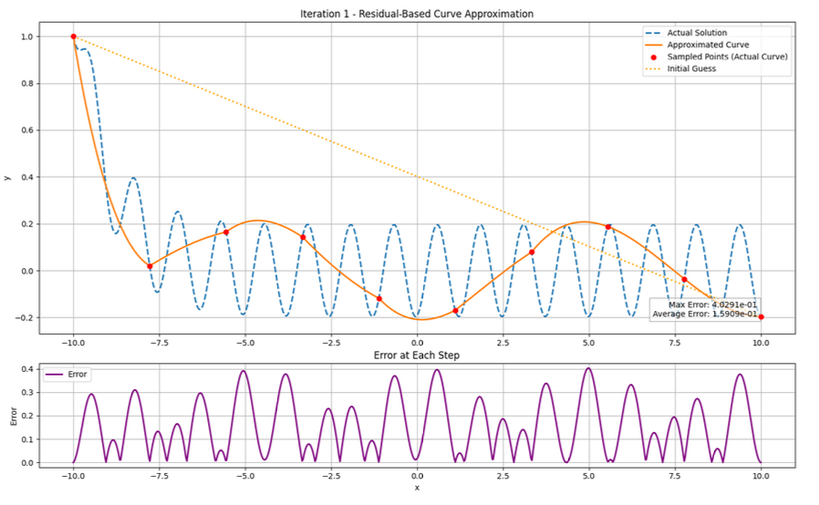
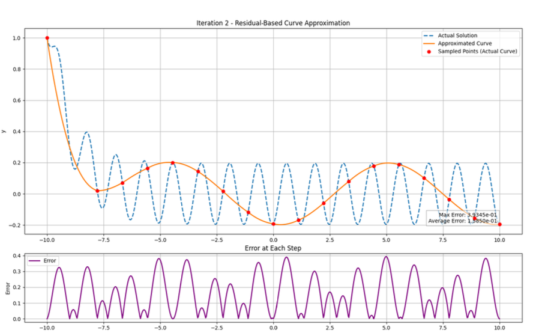

Iteration 5: Near Convergence

This model optimizes curve-fitting by combining polynomial fitting, adaptive sampling, and recursive iterating. The goal is to use as little compute as possible to achieve only the necessary level of accuracy when solving ordinary differential equations. It samples new points only where residuals are high, making it efficient for large datasets. This principle has broader applications including stock market trends, derivatives trading, and neural network optimization.
The blue dashed line is the true curve, the orange solid line is the approximation. Red points are sampled points, and the purple plot at the bottom is the error. Polynomials of degree 3 are used for residual correction.
Adaptive sampling adds points where residuals are high, improving the approximation.


Equation: dy/dx = arctan(100(x - 5))